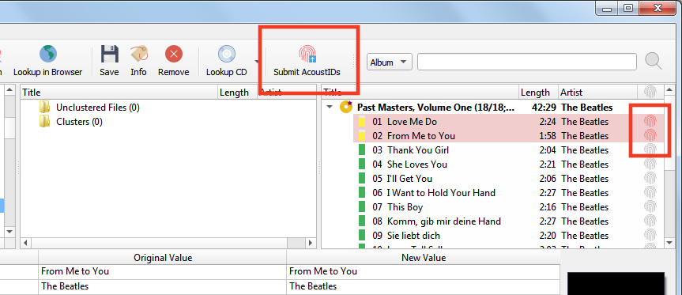
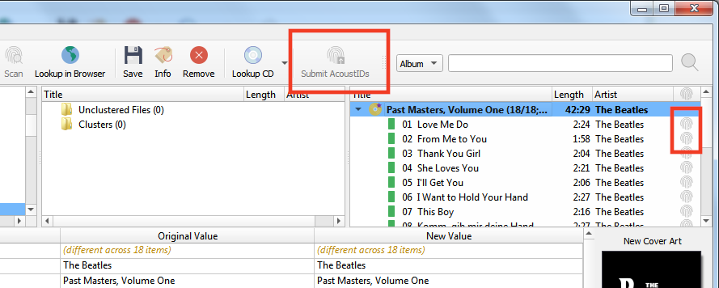
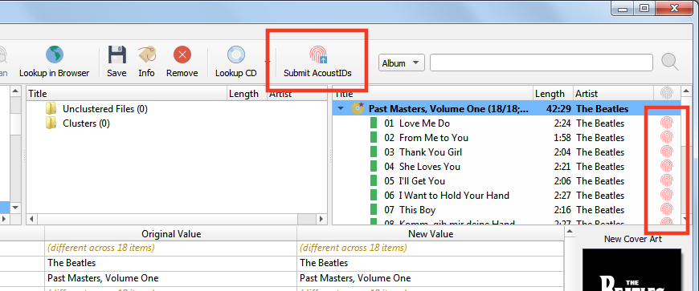

Submitting Acoustic Fingerprints¶
Acoustic fingerprints are very useful for identifying tracks and recordings, allowing them to be looked up in the MusicBrainz database. Thus, it is very valuable to add them when you are tagging files.
Note
When using Picard to submit acoustic fingerprints, it is recommended to enable the Fingerprint column in the table view in the right-hand pane. This is done by right-clicking the column header and checking the box beside “Fingerprint status”. This will display an icon indicating whether the AcoustID was calculated and whether it ready for submission (red = unsubmitted, grey = already submitted).
There are two methods for submitting acoustic fingerprints, depending on the workflow that you are using to identify the releases that you are tagging. The steps to follow to submit acoustic fingerprints for each of the two workflows are:
Submitting when using Scan to identify the release¶
Load files into the clustering pane. Select the files and click the “Scan” button, or select .

If the files are matched to a track and move to the right-hand pane, they already exist in the AcoustID database and do not need to be re-submitted. The “Submit” button will remain disabled.

If the files are not matched, or you manually move them to match to a different track they could be submitted. The AcoustID icon for the tracks will show up in red (i.e.: unsubmitted status) and the “Submit” button will be enabled.
Clicking the “Submit” button will only submit the fingerprints for the files identified in Step 3. The AcoustID icon for the tracks will change to grey (i.e.: submitted status) and the “Submit” button will be disabled.

{kind=link}
{kind=link}
Submitting when not using Scan to identify the release¶
Make sure that the files are properly matched to tracks on a release in the right-hand pane.

Select the files in the right-hand pane and select . This will calculate the acoustic fingerprints for the selected files.

Note
The “Generate AcoustID fingerprints” action button can be added to the button bar by changing the settings in the User Interface options.
The AcoustID icon for the tracks will show up in red (i.e.: unsubmitted status) and the “Submit” button will be enabled.
Clicking the “Submit” button will submit the fingerprints for the files. The AcoustID icon for the tracks will change to grey (i.e.: submitted status) and the “Submit” button will be disabled.

{kind=link}